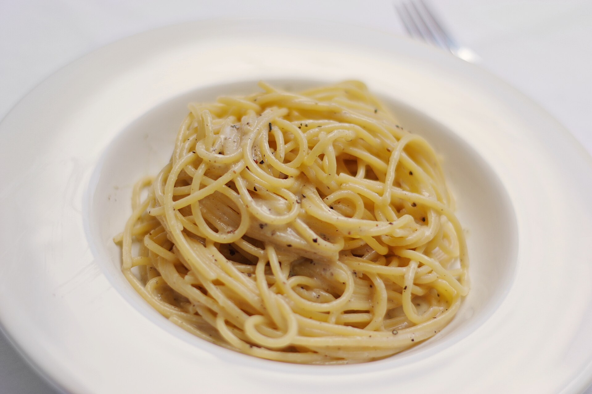

Cacio E Pepe Pasta

Description
Cacio e pepe is a dish with simple ingredients that proves challenging to make properly, cacio e pepe means cheese and pepper
Ingredients
- 200g of Spaghetti
- 1 cube of butter
- 10g of salt
- Grated pecorino cheese, you must grate the cheese yourself
- Black Pepper to taste
Steps
- Bring a pot of water to a rolling boil
- Add 10g of salt to the water
- Once the pasta has cooked, strain it, but save some pasta water
- Place the pasta back in the empty pot and add the butter and pasta water
- Mix well, the finally start adding pecorino cheese while mixing
- Once the sauce is properly emulsified, add pepper and serve